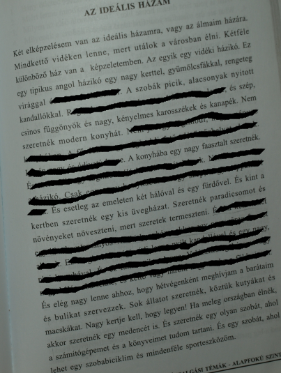

Az ideális házam
Két elképzelésem van az ideális házamra, vagy az álmaim házára. Mindkettő vidéken lenne, mert utálok a városban élni. Kétféle különböző ház van a képzeletemben. Az egyik egy vidéki házikó. Ez egy tipikus angol házikó egy nagy kerttel, gyümölcsfákkal. És kint a kertben szeretnék egy kis üvegházat. Szeretnék paradicsomot és növényeket növeszteni, mert szeretek termeszteni.
